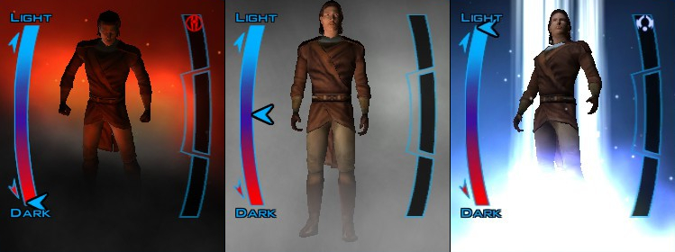
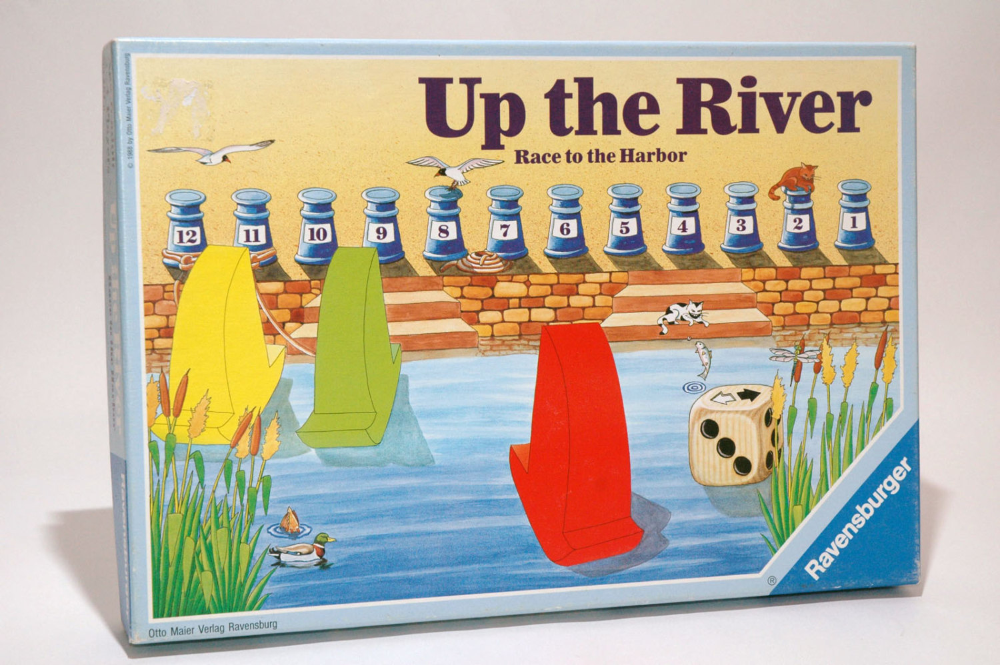
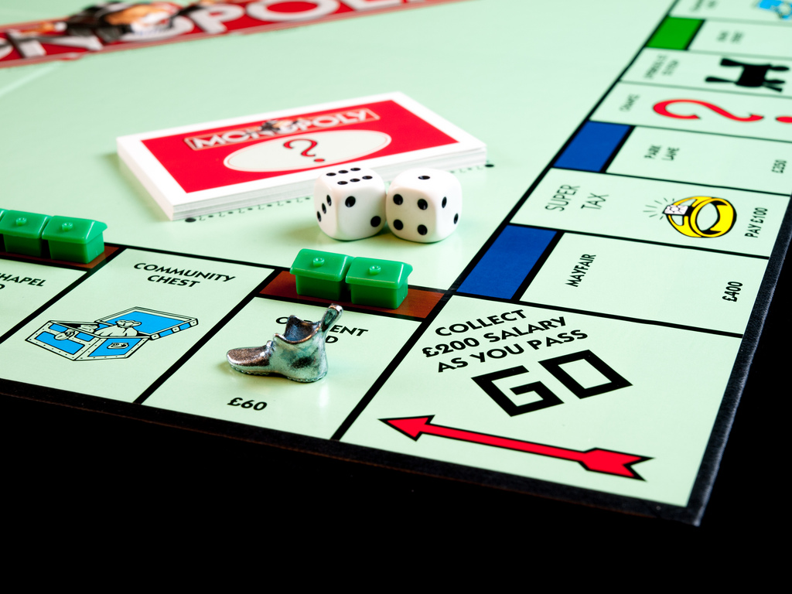
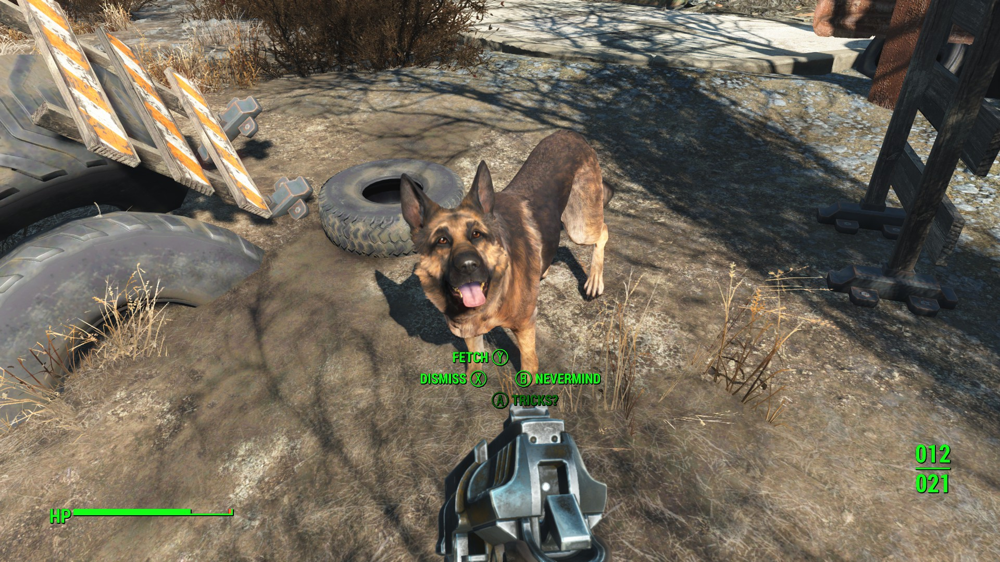
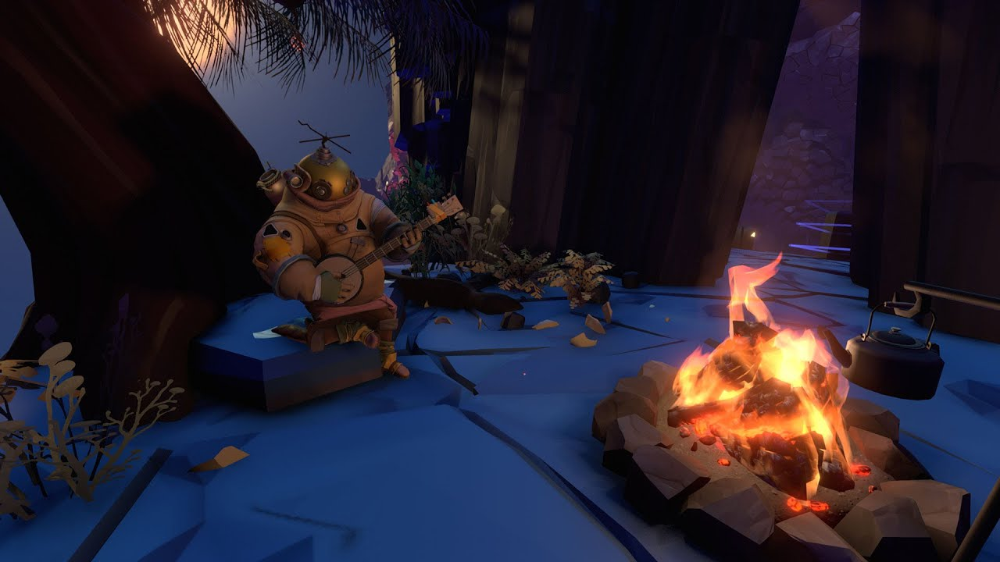
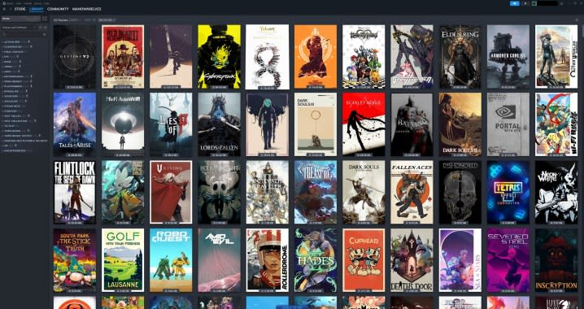
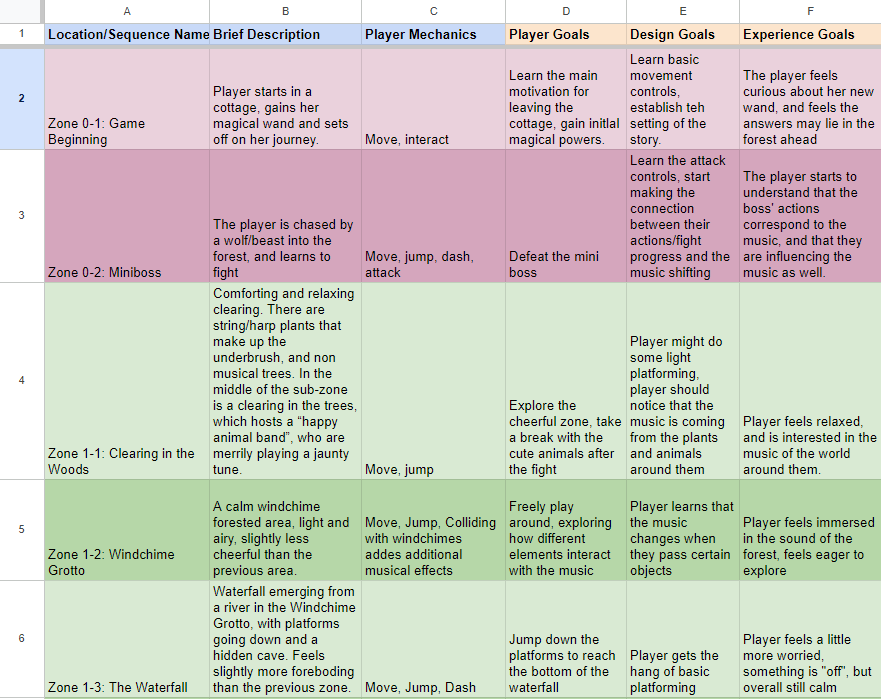
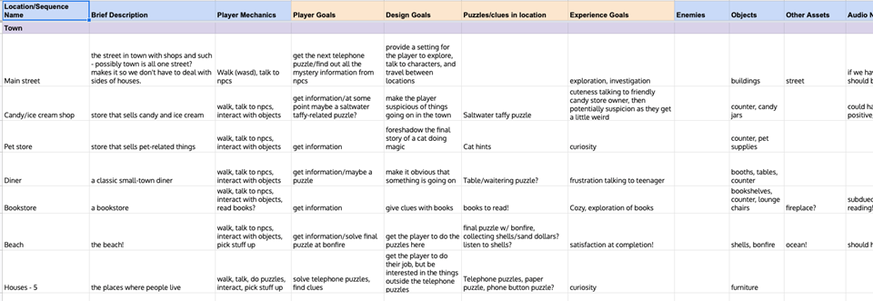
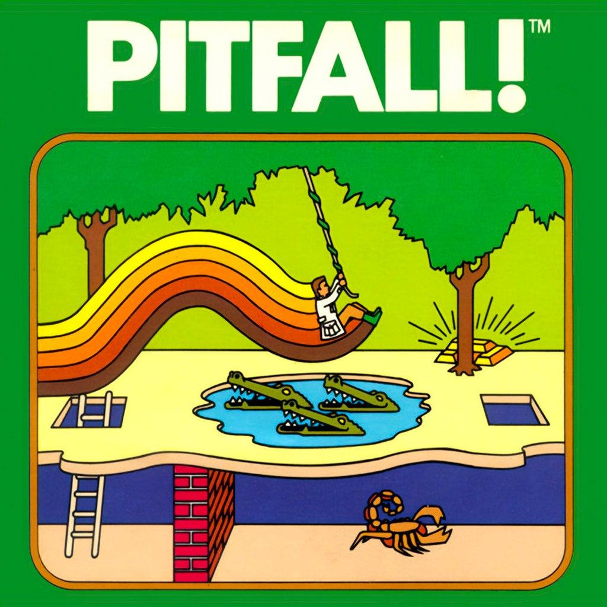

How games make arguments and express values — and how documentation holds the production process together.
Two threads run through this session. First: procedural rhetoric — reading games as ideological artifacts, asking what each game is implicitly saying about how the world works. Second: design documentation — the treatment, macro, and specification, and why the macro in particular is the production tool you’ll be asked to make in every USC Games class.
Today’s Agenda
- Curation — feedback on ideas and discussion of game precedents.
- Design Documentation — using documentation as part of a production process.
- Procedural Rhetoric — how games can be used to make arguments and express values.
PSA: Vote!
- vote.ca.gov
- caearlyvoting.sos.gov
- Vote by mail, vote early, same-day registration!
Procedural Rhetoric
Ideology
What does Star Wars: Knights of the Old Republic have to say about how the world works?

Knights of the Old Republic — light/dark alignment meter.How do games represent ideologies?
- What aspects of the world are represented?
- How are they represented? What are their relationships to each other and the player?
- What aspects of the world does the game not bother representing?
- What actions are allowed?
- What effects do they have? How do they relate to the players and the end states of the game?
- What actions are NOT allowed?
- What skills, talents, methods, and strategies tend to be rewarded?
Ideology — Up the River (1988)

Up the River (1988) — Ravensburger board game.What does Up the River have to say about how the world works?
- Boats are made to get to a destination.
- Persistence is valuable against an environment that resists traversal.
- Luck, speed, and sacrifice are rewarded.
- It’s better to be self-interested than spiteful.
- Only one person can win.
Ideology — Monopoly (1935)

Monopoly (1935).What does Monopoly have to say about how the world works?
- You should try to get as much money as you possibly can.
- Ownership and investment are valuable tools for increasing capital.
- Paying rent is bad. Collecting rent is good.
- Luck and persistence are rewarded.
- If you are wealthy, jail is just an inconvenience.
- Parking should be free.
Ideology — Fallout 4 (2016)

Fallout 4 (2016).What does Fallout 4 have to say about how the world works?
- The world is divided into civilization and wilderness.
- Civilization is valuable but requires constant maintenance and protection.
- The wilderness is hostile but it should be explored and looted.
- Violence is usually the answer.
- Dogs are great.
Ideology — The Outer Wilds (2019)

The Outer Wilds (2019).What does The Outer Wilds have to say about how the world works?
- The universe is full of worlds to be explored and mysteries to be investigated.
- Exploration is tricky, but not dangerous.
- You don’t know what you don’t know.
- Speed, knowledge, and persistence are all rewarded with even more knowledge.
- Sometimes it’s nice to sit by a fire with a friend, listen to some music, and toast a marshmallow.
Precedents and Curation
Precedents
- Designers work from precedents.
- If you can’t find one, keep looking.
- A precedent doesn’t always exactly match what you are trying to do.
Curation

A Steam library — your curation source.What’s in your Steam library that is worth playing? Can you name something from your collection that is:
- less than eight minutes to demonstrate what is interesting
- available to play in the classroom
Design Documentation
What is the purpose of design documentation?
- Who is it for?
- Why is it written at the end of pre-production?
- What does it need to communicate?
Design documentation comes in three flavors:
- Treatment
- Macro
- Specification
Design Treatment
Wireframe sketches — the kind of artifact a treatment includes.
- Overview document
- Executive summary
- Enough details for someone to understand the basic concept
- Diagrams and wireframes
The design treatment is extremely valuable for onboarding and is often used for pitching.
Design Macro
- Production document
- Spreadsheet
- Detailed description of project scope
- Lists assets and resources
- Easy to reference and update
The design macro is usually an internal resource most useful for production planning.
Design Specification
- “Classic” GDD
- Reference document
- Long-form detailed information
- More diagrams, tables, and charts
- Also: art bible, world bible, TDD
Design specifications are not popular, because they are difficult to incorporate into an iterative process. When things change, the specification must be updated — which is an onerous task.
That said, design specifications are sometimes needed to show publishers or investors the project at a greater level of detail.
The Macro, in Depth
Let’s talk about the macro. It’s one of the core documentation tools you’ll be asked to create in just about every USC Games production class. (Certainly it will be a major part of 489.)

15 weeks, 4 project phases — ideation, pre-production, full production, post-production.In the macro, you will describe every sequence of gameplay you intend to build. You will give it a name, a description, and you will detail out the goals of each of these sequences.
There are three kinds of goals for each sequence:
- the player’s goals (what the player thinks they are trying to do)
- the design goals (what the level needs to accomplish mechanically, narratively, or otherwise)
- your experience goals as a director (what the player should feel, beat by beat, as they play through the sequence)
By building this grid, and defining your goals with each specialty in your group, you will find that the macro helps align your team from the very start of the pre-production process. Once you know what your goals are, you’ll be able to fill in your mechanics, any NPCs/enemies, puzzles, clues, locations, other objects and assets that will be needed.
This is your “30,000 foot view” of the project that not only aligns your team, but allows you to scope your effort and make cuts early so that you can manage your resources effectively. The idea behind the macro is that it’s easy to keep it up to date as the design changes.
Example macro — a town-based game, with columns for Location/Sequence, Description, Player Mechanics, Player Goals, Design Goals, Puzzles/Clues, Experience Goals, Enemies, Objects, Assets, Audio.

Example macro — a forest game, color-coded by zone.Resources
- Example Game Macro — Crescendo
- Example Game Macro — Sweeping the Ruins
- Game Macro Template
In-Class Activity — Pitfall Macro

Pitfall! (Activision, 1982).Play Pitfall for 5 minutes and then write a macro for the first several screens of Pitfall.
See You Next Time
- No reading for next week!
- But do suggest a game for us to play in class on Thursday, using the document in our shared drive.
- Upload the video of your Engine Exploration Project to the Drive. We will playtest on Tuesday.